scene0224_00 Diagnostic GT projections. Red points are NOT masks. Approximate visibility uses vertex and sparse scan z-buffers. Unknown depth is not verified visibility.
Instance 0: 02871439 00011: frustum=24, approx=10 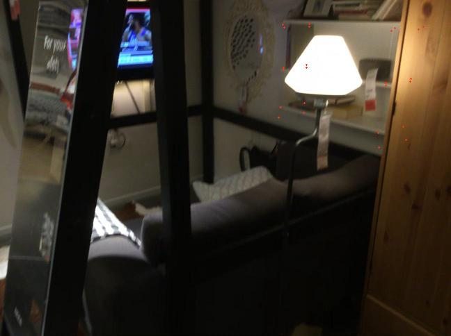
00012: frustum=24, approx=9 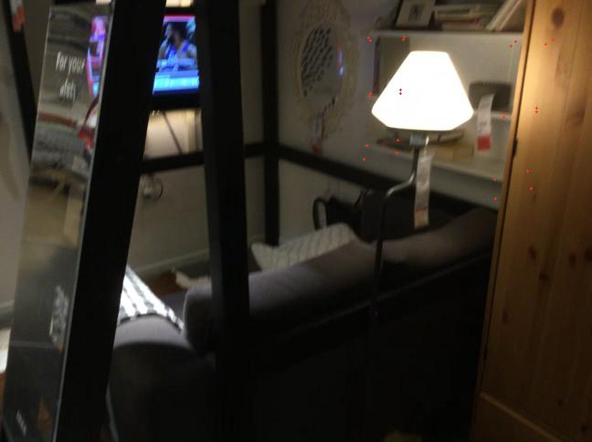
00013: frustum=24, approx=9 Instance 1: 04256520 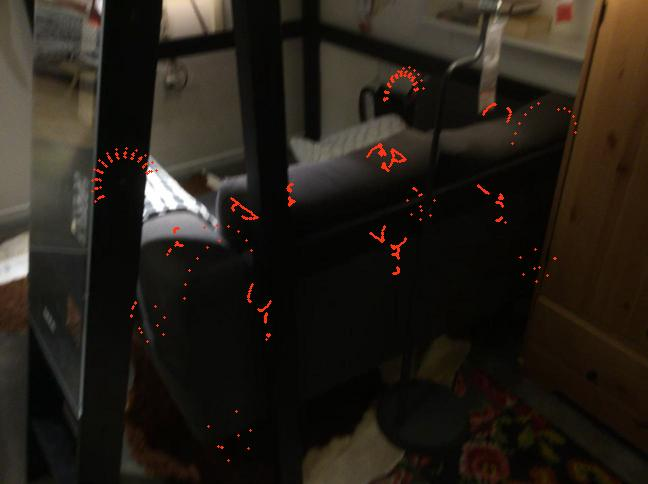
00006: frustum=736, approx=188 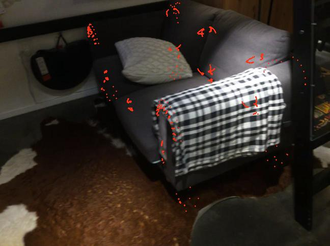
00237: frustum=736, approx=414 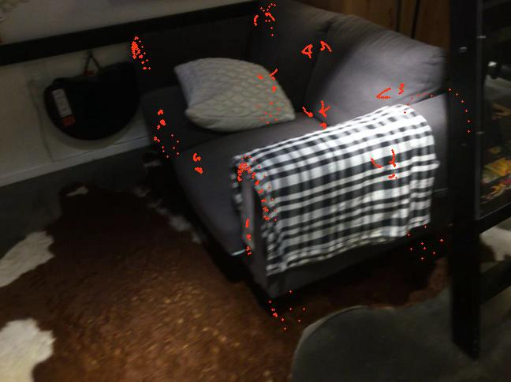
00238: frustum=736, approx=419 Instance 2: 03938244 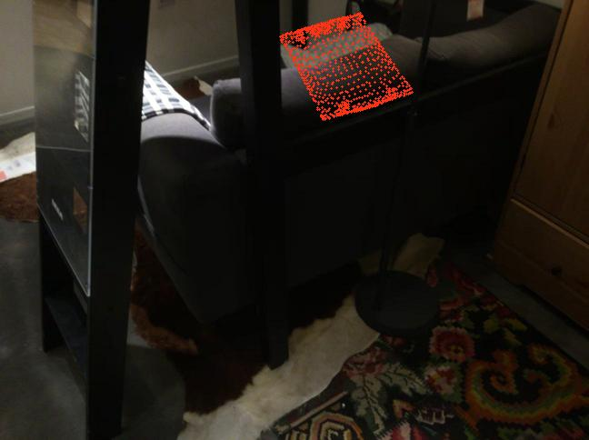
00000: frustum=986, approx=449 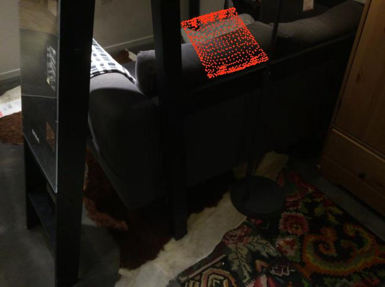
00001: frustum=986, approx=453 00002: frustum=986, approx=463 Instance 3: 02818832 00022: frustum=2885, approx=1890 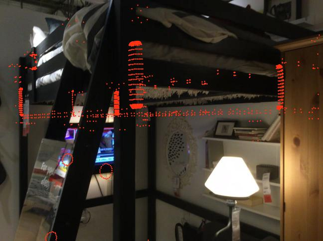
00023: frustum=2882, approx=1852 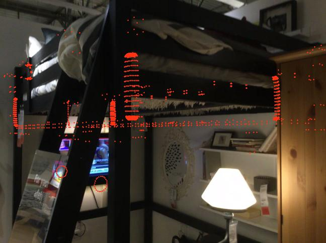
00024: frustum=2881, approx=1860 Instance 4: 02933112 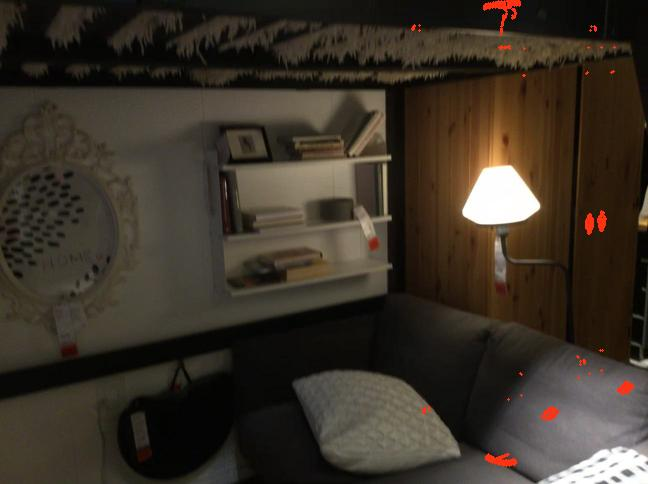
00162: frustum=2632, approx=1293 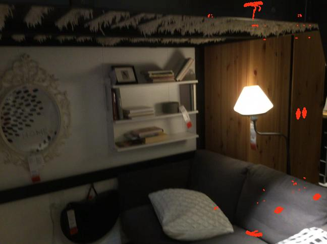
00163: frustum=2632, approx=1230 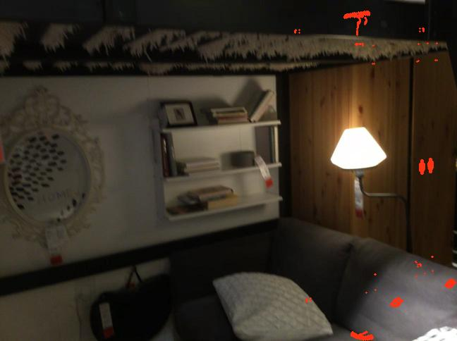
00164: frustum=2632, approx=1134